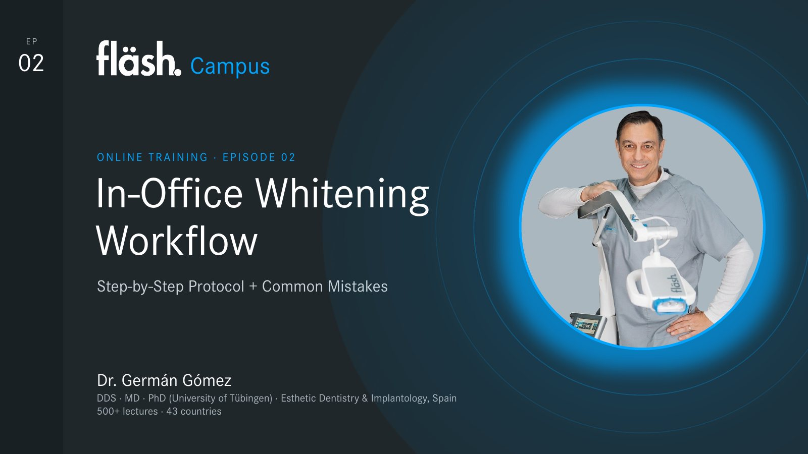

Campus
In-Office Whitening Workflow
fläsh. Campus – die Trainingsreihe mit Dr. Germán Gómez. Blättern mit den Pfeiltasten oder über die Vorschau.

Die 18 Layouts
Aus diesen Layouts entsteht jede Folie der Reihe. Die Beispiele zeigen Inhalte aus fläsh. Campus. Der Schlüssel unter dem Namen hilft bei Korrekturen, etwa „Folie 7 als compare“.
Dateien
- fläsh. Campus als PDFHerunterladen
- fläsh. Campus als PowerPointHerunterladen
- Vorlage mit allen LayoutsHerunterladen
- Layout-Übersicht als PDFHerunterladen
Zum Bearbeiten der PowerPoint-Dateien muss die Schrift Corporate S installiert sein.